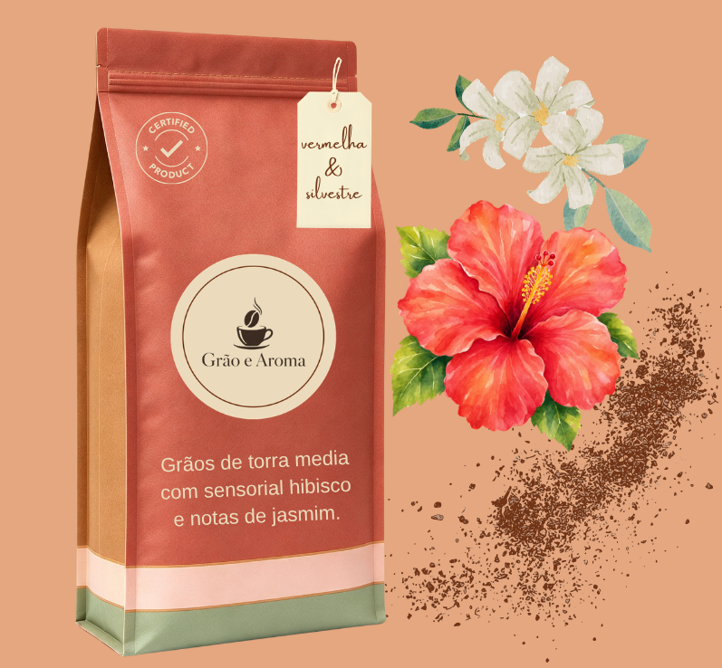
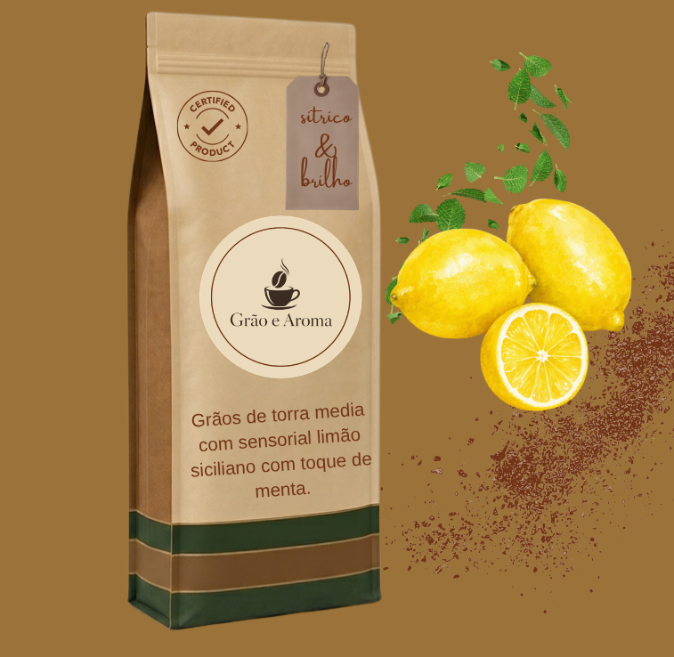

Pagina inicial grao e Aroma
recomendações

Vermelha e Silvestre
Grãos de torra média com hibisco
e notas de jasmim.
Floral, vibrante e
irresistivelmente silvestre.

Cacau e Fineza
Grãos de torra média com sensorial intenso
de cacau.
Doçura aveludada e
sofisticação em
cada
xícara.

Sitríco e Brilho
Torra média com limão siciliano e toque de menta.
Frescor cítrico e leveza que brilha
no paladar.

Caramelo Dourado
Grãos de torra média com sensorial de caramelo salgado.
Doçura aveludada e
finalização suave.
Uma história que começa em cada xícara.
A Grão e Aroma nasceu da paixão pelo café e da vontade de transformar momentos simples em experiências especiais. Acreditamos que cada café possui uma identidade própria. Por isso, exploramos aromas, sabores e combinações sensoriais para criar experiências únicas e personalizadas. Mais do que servir café, queremos despertar sensações a cada gole.